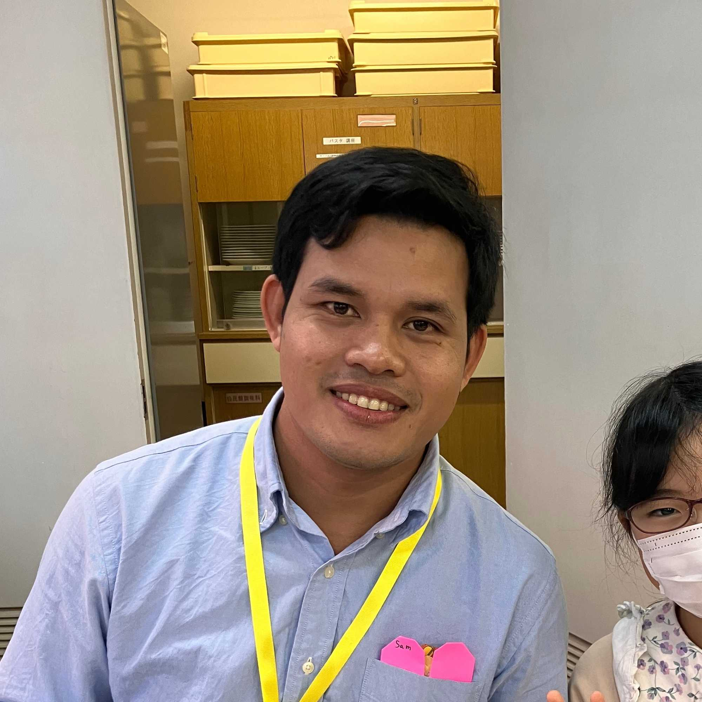
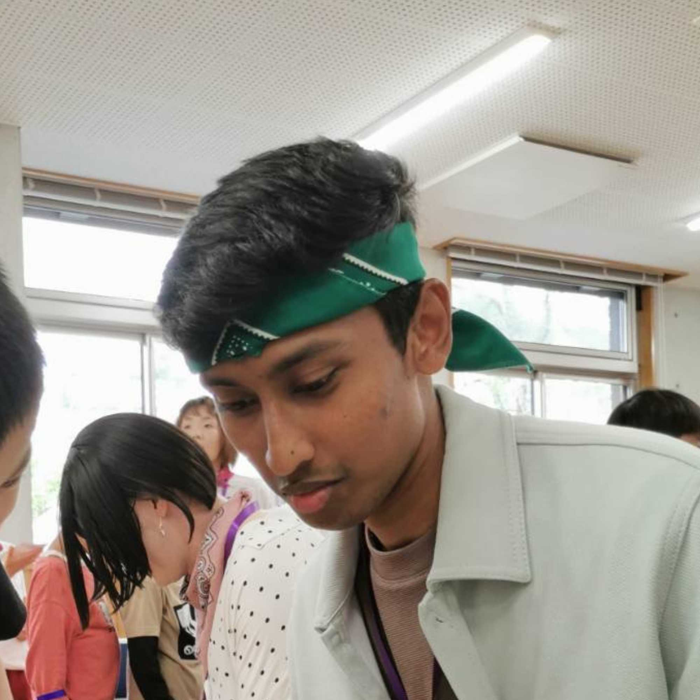

FOR INTERNATIONAL VOLUNTEERS
Share Your Culture,
Change a Child's World.
NPO Nata de Coco connects children in Japan with the wider world — and you are the bridge.
No Japanese required. Just bring your story, your culture, and your smile.
 Apply Now
Apply Now


Why Volunteer with Us?
Here are just a few reasons why international volunteers love being part of Nata de Coco.
No Japanese Needed
Activities are designed to work across language barriers. Our team will support you, and kids learn that connection goes beyond words.
Make a Real Impact
You become a child's first real encounter with the wider world. That spark of curiosity you ignite can shape their entire view of life.
Build Friendships
Join a vibrant, multicultural community of volunteers from 50+ countries. Make lifelong friends while exploring Japan together.
Flexible & Beginner-Friendly
Participate as little as once a month or as often as you like. Our staff will guide you every step of the way — no experience needed.


What You Can Do
There are many ways to get involved — find the style that suits you best.
Cultural Classroom
Visit schools and kindergartens to share your country's games, food, music, and stories. Be the star of an unforgettable class!
CocoSalon Online
Join our online international exchange salon from anywhere in the world. Host workshops, discussions, or simply have fun conversations with kids.

Events & Festivals
Represent your country at our multicultural festivals and community events. Show off traditional costumes, crafts, or cuisine!

Content Creation
Help us create multilingual teaching materials, write blog posts about your culture, or assist with our social media outreach — all from home.
What Our Members Say
Hear from international volunteers who are already part of our community.
"I was nervous at first because I don't speak Japanese, but the kids were so enthusiastic! When I showed them photos of New York, their eyes lit up. It's one of the most rewarding things I've ever done."
Sarah · USA · Volunteer for 10 months
"I taught the kids a simple samba rhythm and they went absolutely crazy for it! The staff were incredibly supportive. I feel like I've found my second family here in Japan."
Lucas · Brazil · Volunteer for 1.5 years

"As a student on exchange in Tokyo, I wanted to give something back to the community. Nata de Coco made it so easy to get started. Even the online CocoSalon sessions are incredibly fun and well-organized."
Camille · France · Online Volunteer for 8 months
Requirements
Please review the details below before applying.
| Who can apply | Anyone aged 18 or over who lives in Japan or is willing to join online. No nationality restrictions. |
|---|---|
| Japanese level | Not required. We provide bilingual staff support at all sessions. |
| Frequency | From once a month — or join whenever you are available. Online participation is always welcome. |
| Location | Elementary schools, kindergartens, and community centers in the Tokyo area, or fully online via CocoSalon. |
| Transportation | Travel expenses covered (within a set limit). |
| What to bring | Comfortable clothing and a smile. Specific details will be shared at the orientation session. |
| Insurance | Volunteer accident insurance is provided by NPO Nata de Coco at no cost to you. |

"Be the bridge between cultures and open the world for a child."

Active volunteers
How to Apply
The process is simple — we'll guide you every step of the way.
Apply Online
Click the "Apply Now" button below and fill in the short application form. It only takes a few minutes!
Online Orientation
A staff member will reach out within a few days. We'll hold a friendly 45-minute orientation in English to introduce our activities.
Session Prep
Choose a session that works for you. We'll help you plan a short activity from your culture — it's fun, we promise!
Start Volunteering!
You're all set! Join your first session alongside our friendly staff and start creating memories with the kids.

Ready to open the world for a child?
Apply Now
Any questions? Feel free to contact us in English anytime.